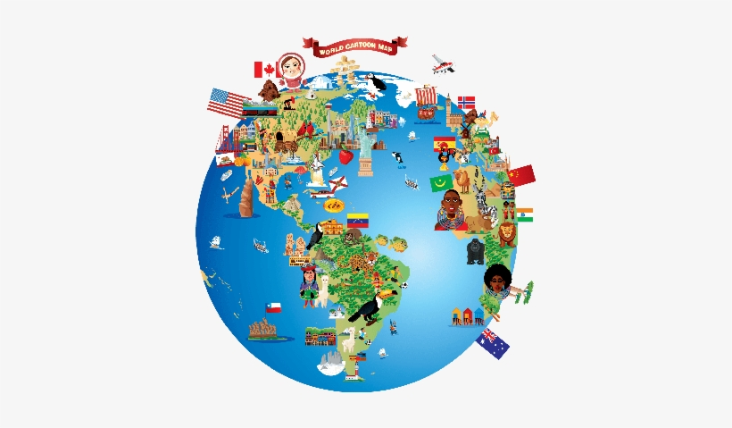
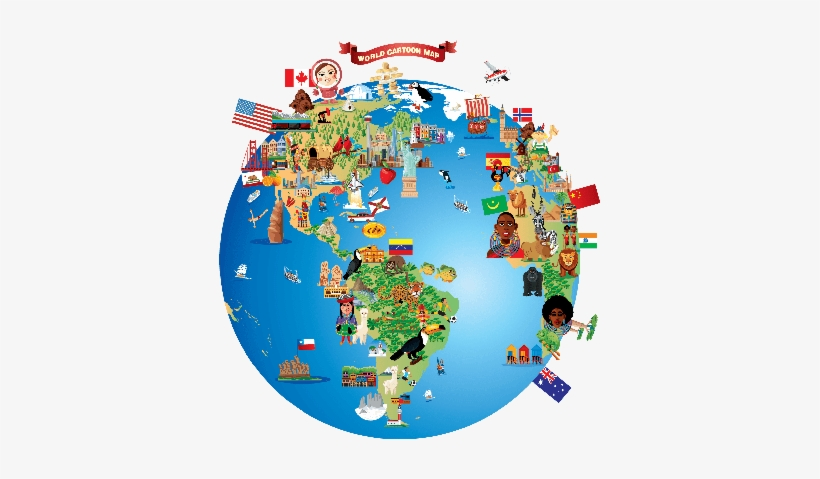

É utilizado como um teste ou como um exemplo de código de uma linguagem.

Olá mundo é um famoso programa de computador que imprimi "Olá mundo!" (ou "hello world!"), usualmente seguido de uma quebra de linha, com algumas variações como inexistência do ponto de exclamação e letras em minúscula de saída.
É utilizado como um teste ou como um exemplo de código de uma linguagem.
